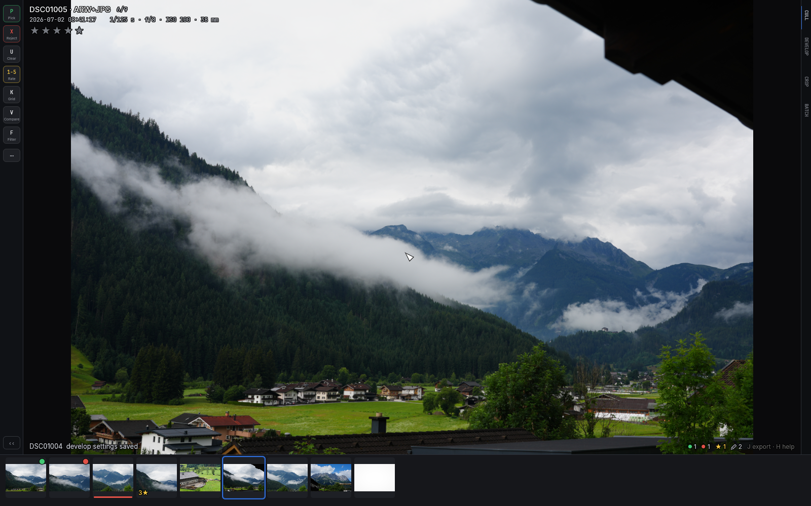
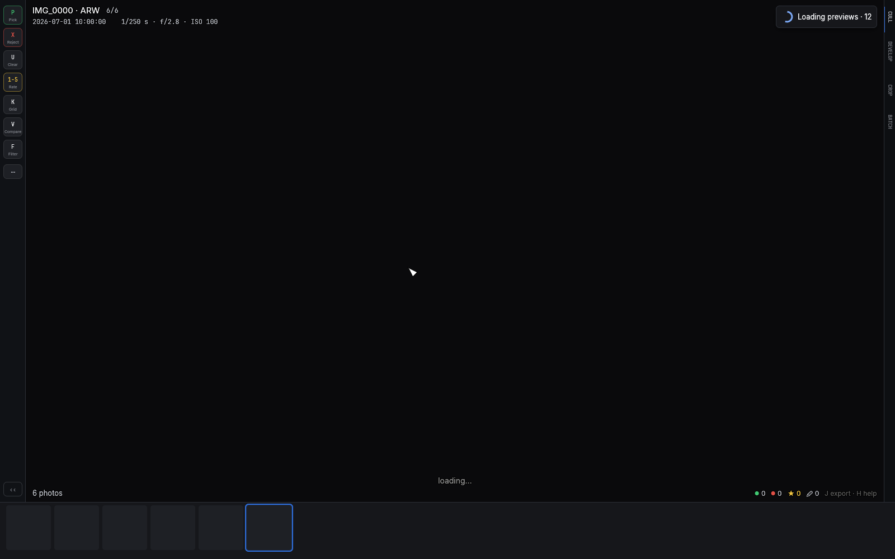
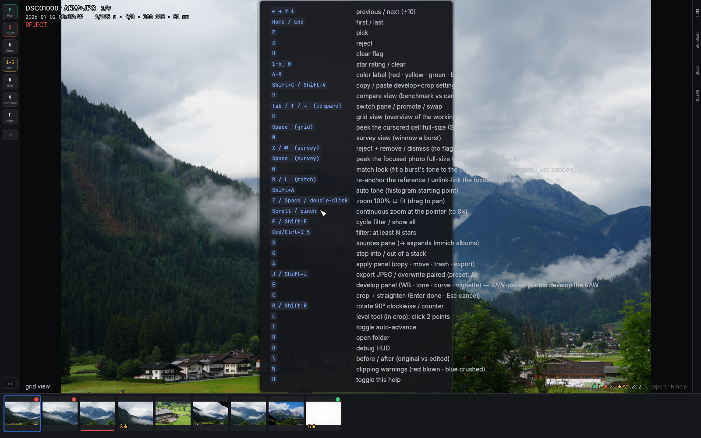

Getting started
Install and launch
On a Mac, install from the release DMG — the latest one is on the
downloads page, older
versions on the
releases page.
Open the DMG, drag culler.app into Applications, launch it, and
right-click the Dock icon → Options → Keep in Dock. Everything in this
manual starts from there.
Two prompts are normal for a downloaded app:
- macOS may refuse the first launch because it "cannot check it for malicious software". System Settings → Privacy & Security → scroll to the blocked-app notice → Open Anyway, once per copy. A notarized build (paid Apple Developer ID) skips this entirely.
- Sources on the Desktop, in Documents/Downloads, on SD cards or network drives may trigger a one-time folder-access prompt on the next launch — see macOS folder permissions.
culler checks for a newer version on launch with a single anonymous
HTTPS request to GitHub for a small version file — no account,
telemetry, or usage data involved. If you're offline or GitHub is
unreachable, the check fails silently and nothing appears. When a newer
version exists, a small ● update vX.Y.Z note joins the corner readout
(and an "Update available" item joins the Help menu); clicking either
opens the release notes in your browser — nothing updates by itself.
Add disabled=1 to ~/.culler/update.conf to turn the check off.
First launch lands on the sources pane: add a photo
folder (or an Immich server) and open it. A folder is scanned
immediately: RAW and JPEG files with the same name are treated as one
photo, existing .xmp sidecars (yours or another editor's) are read, and
decoding starts around the first photo.
(Building from source — for people working in the source repository:
cargo build --release, and scripts/package-macos.sh produces the
Mac app and DMG.)
The screen at a glance

- The photo fills the window, fitted. All text drawn over it carries a thin dark halo so it stays readable even on a blown-out sky (example).
- Top-left overlay: filename, position in the current view (
3/128), and mode tags such as the active filter,[manual advance],[stack]or[before]. Below it: capture time and exposure info, then your stars, PICK/REJECT state, and stack size where relevant. - The filmstrip along the bottom shows thumbnails with your culling state at a glance: a green dot for picks, red for rejects, a star count, and a colored bar for color labels. The accent ring marks the current photo. Crop, rotation and develop edits show live in the thumbnails.
- Bottom-right counters: whole-folder totals of picks, rejects, rated
and edited photos, in the same colors as the filmstrip badges, plus a
hint for
JandH. - The status line (bottom-left) narrates what just happened: the rating you set, an export finishing, a confirmation prompt.
- The rail (left edge) is a slim column of keycap buttons for the current mode's verbs — Pick, Reject, Rate and friends while culling — each teaching its keyboard key. It collapses to a thin line when you want a bare photo, and buttons you've clearly learned dim out of the way. The ⋯ opens a menu with everything else, each row naming its key. See culling with the mouse.
- The spine tabs (right edge: CULL · DEVELOP · CROP) are the workflow's table of contents — click to switch, or rest the pointer on one to fire its quick actions without switching.
- The system menu bar (Mac app): everything above is also in the regular macOS menus — File, View, Photo, Window, Help — with each item naming its culler key, so the menu bar doubles as a shortcut reference. Quitting mid-session is always safe: an open Match Look or crop session is committed, never discarded.
- The pending-work pill (top-right) appears only while something is running against a server — syncing ratings, uploading, fetching previews. See batch operations.
{kind=link}

Press H at any time for the built-in key overlay:

Now go cull something: Culling.